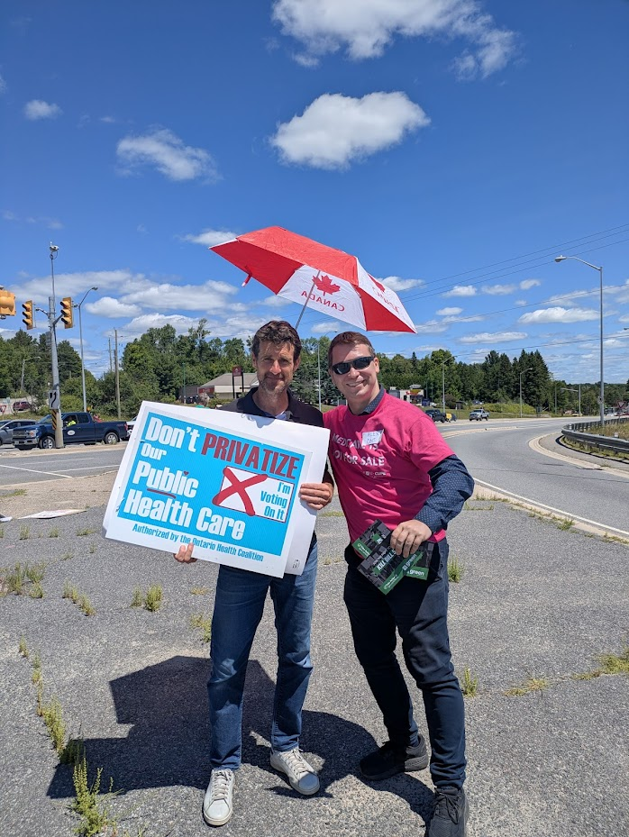
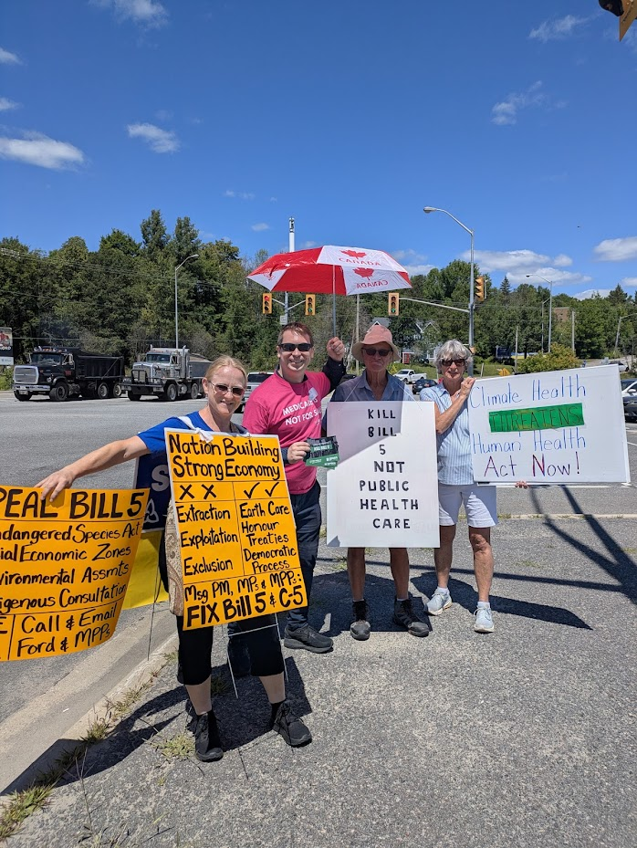

Campaign News & Media
Healthcare Over Weapons: Canadians Rally to Protect Public Services
This week, Alex Ballagh proudly represented Hamilton at the Health Coalition’s Shadow Summit in Huntsville, Ontario. The event, held at Deerhurst and Hidden Valley, brought together hundreds of advocates, healthcare workers, and political allies from across the country to call for stronger investment in Canada’s public healthcare system.
Ballagh, who led the car decoration team for a spirited parade past the Deerhurst Summit and served as event photographer, emphasized the need to protect funding for hospitals, nurses, and universal pharmacare. “Our taxes should fund services that save lives—not bloated military budgets that serve foreign interests,” they said.
As pressure mounts from international allies like the U.S. to double military spending, Ballagh and fellow delegates called on leaders like Mark Carney to reject austerity and trickle-down economics in favour of robust public investment. The summit featured speeches, rallies, and coordinated advocacy efforts highlighting the urgent need to resist cuts and privatization.
Special thanks were extended to Natalie Mehra for her leadership throughout the event, and to all the volunteers and attendees who made the summit a success.
#HealthCare #ShadowSummit #ProtectPublicHealth #StopTheCuts
-
Protecting What Matters: People, Planet, and Public Good Over Profits
Great start to the week supporting the #killBill5 movement out in Huntsville on Tuesday! I was joined by such stellar advocates as Matt Richter of the Ontario Green Party, and dozens of local people, each fighting to ensure we put an end to the law-exempt "special economic zones" that this bill would force on us all. Hamilton has seen the consequences of cutting corners, from damaged infrastructure to major sewage spills. Imagine how that would look if there were no regulations at all! A vote for Alex Ballagh is a vote for responsible leadership!
-
Mobile Harm Reduction Efforts a Success at Art Crawl Despite Nearby Incident
Alex Ballagh and volunteers with the Southern Ontario Peer Education Network (SOPEN) launched their first-ever mobile harm reduction booth at Hamilton’s Art Crawl this weekend, marking a major step forward in accessible public outreach.
Despite reports of a nearby shooting that raised safety concerns, all volunteers returned home safe. The team’s efforts were a resounding success—training 60 people and distributing an equal number of harm reduction kits in less than 30 minutes. The demand was so high, they ran out of supplies well before the evening ended.
“We’ll definitely be coming back with more material next time,” said Ballagh, who extended thanks to volunteers Sarah and Loreigh for their essential support.
The mobile booth initiative is part of a broader effort to make harm reduction training and supplies more accessible during large public events. Those interested in volunteering for future Art Crawl efforts are encouraged to reach out to Ballagh or SOPEN to get involved.
#HarmReduction #SOPEN #ArtCrawl #Hamilton #PublicHealth #CommunitySafety
-
Marching for Housing Justice: Hamilton Rallies to Demand Permanent Homes for All
Alex Ballagh joined community members and housing advocates in a powerful demonstration alongside the Hamilton Encampment Support Network, calling for urgent action to end homelessness and address the city’s deepening housing crisis.
“The existence of homelessness is not inevitable—it’s a direct result of policy failure,” said Ballagh, highlighting how Canada once led the world in housing policy before decades of social housing cuts began in the 1980s. “We have the resources to build homes. Our leaders just choose not to.”
The march brought attention to the growing number of Hamiltonians forced into encampments and precarious living situations, especially since the onset of the COVID-19 pandemic. Ballagh emphasized that homelessness will not be solved through austerity or neglect, but through bold investment in publicly built, permanent housing.
Criticizing the for-profit housing system that thrives on scarcity, Ballagh called for political courage to prioritize people over developers and donors. “Every person deserves a home—no exceptions. We need to build, not blame.”
-
Housing Justice in Action
This week, Alex joined tenant leaders from across Hamilton to speak at City Hall in support of stronger rent control, a a Maximum Heat Bylaw, and the expansion of non-market housing. “Housing is a right — not a revenue stream,” said Alex in the delegation.
-
Rallying for Workers’ Rights in Solidarity with IUOE
At the IUOE Local 793 solidarity event, Alex stood with striking workers demanding fair wages and better conditions in public services. We need stronger union protections and living wages across all sectors.
-
Alex Speaks out Against Bubble Bylaw
Alex joined the coalition against Doug Ford's Bubble Bylaws, legislation that violates the Canadian Charter of Rights and Freedoms: freedom of expression, freedom of peaceful assembly, and freedom of association. The bylaw covers vague “vulnerable institutions,” including religious institutions,
schools, and nearby city-owned property like sidewalks and streets; meaning it's not just about protecting buildings, but restricting entire public spaces. The fine is up to $10,000 — an unprecedented deterrent against public expression. This opens the door for selective enforcement based on the content of the protest. Peaceful protest is a cornerstone of democracy, not a threat to it.
See the Interview Here: https://www.paulweinberg.ca/2025/07/08/charter-challenge-may-burst-hamilton-bubble-zones/
-

